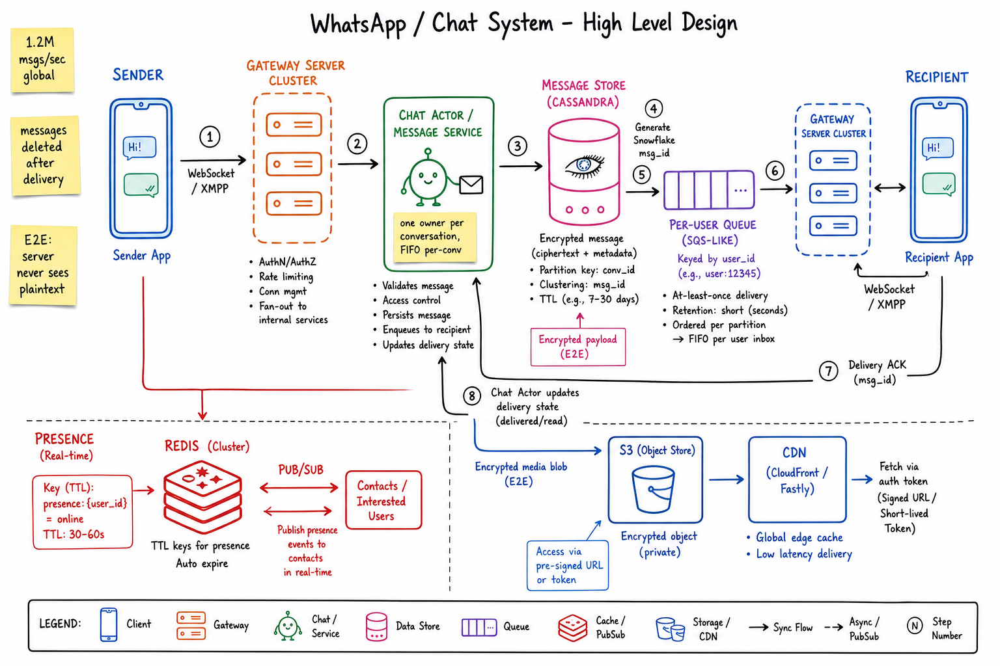
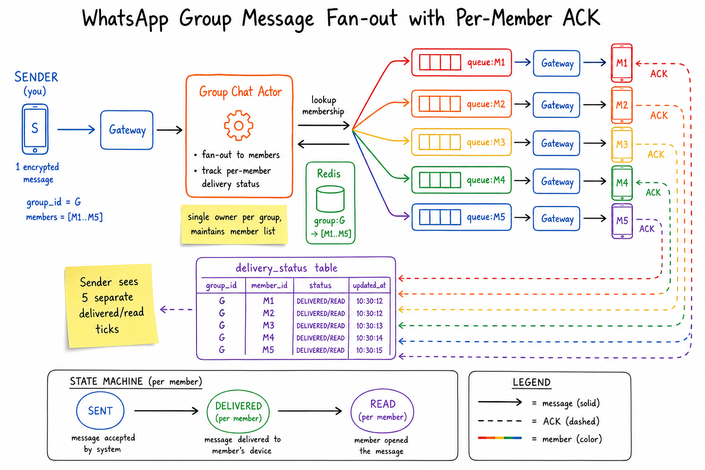
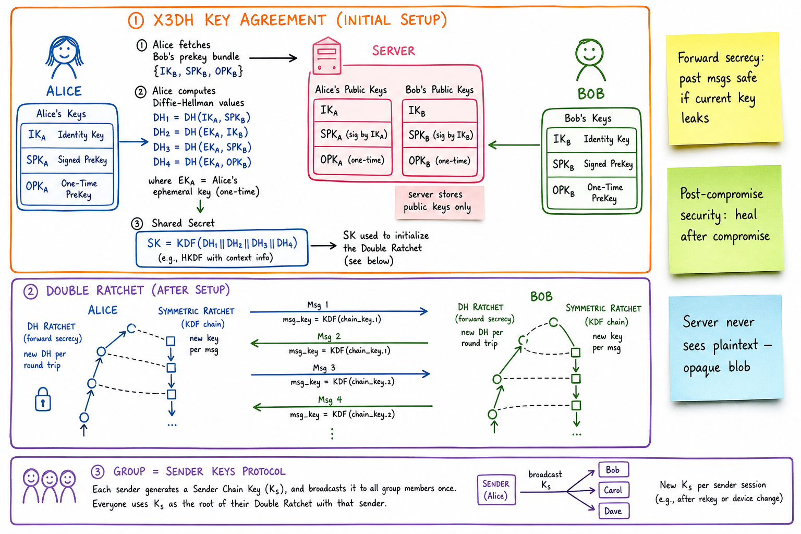

WhatsApp / Chat System // HLD
2B users, ~100B messages/day = 1.2M msgs/sec. Persistent WebSocket per device to a regional Gateway, per-conversation "chat actor" enforces FIFO ordering, Signal Protocol E2E so the server never sees plaintext, per-recipient queues for offline delivery, presence in Redis with TTL pub/sub.

Whiteboard HLD: sender phone holds a persistent WebSocket / XMPP connection to a Gateway. Gateway forwards to the Chat Actor (Message Service) which is the single FIFO owner of the conversation. Chat Actor persists encrypted ciphertext to Cassandra (Message Store), then enqueues to the recipient's per-user queue. Recipient's gateway delivers over WebSocket; phone returns ACK. Presence in Redis with TTL keys + pub/sub. Media is encrypted end-to-end and uploaded to S3 + CDN with auth tokens.
01 — Requirements
Functional
- 1:1 chat with text, images, video, voice notes, files
- Group chat up to ~1024 members
- Online / last-seen presence
- Delivery receipts: sent → delivered → read (single/double/blue ticks)
- End-to-end encryption (server never reads message content)
- Voice / video calls (signaling only at this layer; media is P2P/SFU)
- Multi-device sync (companion devices)
Non-Functional
- Low latency: p99 < 500ms message delivery for online recipients
- Throughput: 1.2M msgs/sec sustained, 5x burst
- Reliable delivery: at-least-once until ACKed; never lose a message
- Per-conversation ordering: messages appear in send order within a conv
- End-to-end encryption: server is a routing relay, not a reader
- Availability: 99.99%; offline users get messages on reconnect
- Cheap infra: WhatsApp famously ran 450M users on ~50 engineers via Erlang
01a — Core Entities
| Entity | Key Fields | Notes |
|---|---|---|
| User | user_id, phone_e164, public_identity_key, registered_at | Phone number = identity. Identity key persists across devices. |
| Device | device_id, user_id, push_token, last_seen, identity_pubkey, prekey_bundle | Each device has its own keypair (multi-device support). |
| Session | session_id, device_id, gateway_node, ws_conn_id | WebSocket session affinity. Sharded by user_id. |
| Conversation | conv_id, type (DM/GROUP), member_set, created_at | Each conv has a designated chat-actor owner. |
| Message | msg_id (Snowflake), conv_id, sender_device, ciphertext_blob, ts | Server stores opaque ciphertext only. Partition by conv_id. |
| Group | group_id, name, admin_set, member_devices, group_key_epoch | Member changes bump key epoch → new sender keys. |
| Delivery Status | (msg_id, recipient_device) → SENT|DELIVERED|READ, ts | Per-recipient state for read-receipt UX. |
| Per-User Inbox Queue | queue:user:{u} → [msg_id...], retention seconds-to-30d | Holds messages until ACKed; then deleted. |
| Presence | presence:{user_id} → (status, last_seen_ts), TTL ~60s | Redis TTL key + pub/sub to interested contacts. |
01b — API Design
WebSocket (the real API)
WS /v1/chat (after auth handshake)
# client -> server frames
SEND { client_msg_id, conv_id, ciphertext, media_refs? }
ACK { msg_id } # delivered ack
READ { conv_id, up_to_msg_id }
TYPING { conv_id, on:bool }
PRESENCE { status: online|away|offline }
KEY_FETCH { user_id } # get prekey bundle
# server -> client frames
DELIVER { msg_id, conv_id, sender, ts, ciphertext }
DELIVERED { msg_id, recipient_device, ts } # back to sender
READ_RCPT { conv_id, by_user, up_to_msg_id }
PRESENCE { user_id, status, last_seen }
GROUP_UPD { group_id, op, member, epoch }
REST (control plane only)
POST /register phone -> OTP -> account
POST /devices add device; upload prekey bundle
GET /users/{phone}/prekeys one-time prekey for session init
POST /groups create group { name, members }
PUT /groups/{id}/members
POST /media/upload-url presigned S3 PUT
The WebSocket is the product. Messaging is push-based, not request-response. REST exists only for account / group management / key exchange. Idempotency on SEND uses client_msg_id so retries don't duplicate.
02 — Estimation
Users: 2B MAU, ~1.5B DAU Messages/day: ~100B (~50% groups, ~50% 1:1) Messages/sec avg: 1.16M/s Peak (3x): ~3.5M/s Group fan-out multiplier: avg group ~20 members -> effective fan-out events/sec = 1.16M * 1.5 ~= 1.7M/sec (1:1 = 1; groups multiply but most groups small) Concurrent online users: ~500M (WebSockets) Per gateway box: ~500K conns -> ~1000 gateway boxes globally Storage: Message store retained until delivered (seconds to days, NOT forever). Even retaining 30d for offline: 100B * 30 = 3T msgs hot. At 200 bytes ciphertext + metadata: 600 TB. Spread across regions. Media: ~20% of messages have media; avg 200KB compressed Daily media volume: 20B * 200KB = 4 PB/day → S3 + CDN Retention 30 days then expire.
03 — Why It's Hard
- Persistent connection scale: 500M concurrent WebSockets is its own infra problem (sockets, file descriptors, idle keepalive).
- FIFO per-conversation: messages must arrive in send order; out-of-order is a worse bug than slow.
- At-least-once + dedupe: retries on flaky mobile networks must not duplicate.
- End-to-end encryption = server cannot inspect, can't do server-side search, must not see content.
- Group fan-out = one send produces N deliveries + N ACKs to track.
- Offline delivery — recipient might be unreachable for days; replay on reconnect.
- Multi-device changes everything: same user has phone + desktop + web; messages mirrored, sessions per device.
04 — Architecture
Sender Phone Recipient Phone
| |
WebSocket WebSocket
| |
v ^
+-----------+ +-----------+
| Gateway | | Gateway |
| (Erlang/ | | (Erlang/ |
| OTP) | | OTP) |
+-----------+ +-----------+
| ^
| |
v |
+--------------------+ +------------------------+
| Chat Actor / |----> | Per-User Inbox Queue |
| Message Service | | (SQS-like, sharded by |
| (per-conv owner, | | user_id) |
| FIFO) | +------------------------+
+--------------------+ ^
| | |
v v |
+--------+ +--------+ +--------------+
| Msg | | Group | | Notification |
| Store | | Svc | | Service (FCM,|
|(Cassan.| | (mem- | | APNS for off-|
| | | bers) | | line push) |
+--------+ +--------+ +--------------+
^
|
+--------+
| Redis |
|presence|
+--------+
Media: client <-> S3 (presigned) <-> CDN (with auth token)
05 — WebSocket Transport
Persistent connection is non-negotiable: HTTP polling at 2B users would melt the planet. WebSocket per device, kept alive with ~30s ping.
- Gateway nodes terminate TLS + WS; written in Erlang/OTP (one process per connection, ~500K connections per box).
- Session affinity: session_id stored in Redis; if a gateway dies, the client reconnects and re-registers within seconds.
- Heartbeats: ping every 30s; idle timeout 60-90s; client implements exponential backoff reconnect.
- QoS: client-side outbound queue persists across reconnects so unsent messages survive network changes (wifi↔LTE).
- See WebSockets vs SSE.
06 — Per-Conversation Ordering
FIFO inside a conversation is a hard requirement. Cross-conversation order doesn't matter.
Chat Actor pattern
- Each conversation has a single owner process (Erlang gen_server / Akka actor / Kafka-keyed consumer).
- All SENDs for that conv_id route to that one process (consistent hashing on conv_id).
- The process serializes writes: assigns Snowflake msg_id, appends to message store, enqueues to recipient queues — all in order.
- No locks needed; mailbox is the lock.
Client-side ordering
- Server emits monotonic msg_id (Snowflake). Client sorts on render.
- Out-of-order frames during reconnect → client buffers and reorders by msg_id.
Why actor-per-conv, not actor-per-user? Group messages would have N user actors fighting for a lock. Per-conv naturally serializes the messages that need to be ordered together.
07 — Delivery Receipts (Single/Double/Blue Ticks)
State machine per (msg_id, recipient_device)
send() deliver() read()
SENT --------> SENT --------> DELIVERED --------> READ
|
(offline)
v
still SENT
- SENT: accepted by server, persisted, enqueued. Sender sees single tick.
- DELIVERED: recipient's device has received it and ACKed. Double grey tick.
- READ: recipient opened the chat. Double blue tick (if enabled).
State updates flow back through the Chat Actor → pushed to sender's WebSocket as DELIVERED / READ_RCPT frames. For groups, sender sees aggregate (e.g. "delivered to 12/20").
Privacy: read receipts can be disabled; server then never emits READ_RCPT frames for that user.
08 — Presence (Online / Last-Seen)
- On connect:
SET presence:{user_id} = "online" EX 60in Redis. - Heartbeat refresh every 30s while connected; TTL handles disconnect detection without explicit goodbye.
- On disconnect: TTL expires → Redis keyspace notification or scheduled job emits "offline" event, updates last_seen_ts.
- Subscribers (people who have a chat open with you) get pushed updates via pub/sub channel
presence:{user_id}. - Privacy: last-seen visibility is per-user setting; server checks before emitting.
- See Redis for TTL + pub/sub semantics.
Presence is ephemeral. Don't store online/offline transitions in a DB — Redis TTL + pub/sub is the right primitive. Storage would be O(transitions) which is huge.
09 — Group Fan-out

A single group message is fanned out by the Group Chat Actor to each member's per-user queue. Each member's gateway delivers independently and returns its own ACK. The actor tracks per-member delivery status so the sender sees aggregated ticks. Group key (sender keys protocol) lets all members decrypt the same ciphertext blob — no per-recipient re-encryption needed.
- Group Chat Actor owns the member set:
group:{G} -> [M1..MN]in Redis (cached) + Cassandra (durable). - One inbound SEND → N enqueues to
queue:{M_i}. Same ciphertext, same msg_id. - Each recipient ACKs independently. Per-member delivery_status row updated.
- Backpressure: if a member is offline, their message stays in their queue; doesn't block the others.
- Member changes bump
group_key_epochso kicked members can't decrypt new messages even if they intercept the ciphertext.
Server fans out ciphertext, not per-recipient re-encryption. The Signal Sender Keys protocol distributes one symmetric key to all current members; sender encrypts once.
10 — End-to-End Encryption (Signal Protocol)

Signal protocol = X3DH key agreement (Alice mixes 3-4 Diffie-Hellman values with Bob's identity/signed/one-time prekeys to derive an initial shared secret) + Double Ratchet (every message advances a symmetric KDF chain for forward secrecy; every round-trip advances a DH ratchet for post-compromise security). Groups use Sender Keys protocol: each sender broadcasts one symmetric chain key to all members; encrypts once per message regardless of group size.
Key flow at a glance
- Each device generates: identity key (IK, long-lived), signed prekey (SPK, rotated periodically), batch of one-time prekeys (OPK).
- Public halves uploaded to server. Server is a key directory; never sees private keys.
- Alice wants to message Bob → fetches Bob's prekey bundle → runs X3DH → derives shared secret SK.
- Both sides initialize Double Ratchet from SK. Every msg has fresh key. Every round-trip rotates DH.
- Server stores only ciphertext; even with full server compromise, past messages remain unreadable.
Why this matters for the design
- Server can't do search (no plaintext) → clients do local search.
- Server can't moderate content → metadata-based abuse detection (rates, network analysis).
- Server can't help when user loses phone → backups are encrypted with user-controlled key.
- Media is encrypted with a per-blob symmetric key shared via the messaging channel; S3 stores ciphertext blob.
11 — Offline Storage & Delivery
If a recipient is offline, the message must wait. WhatsApp's classic model: hold the message just long enough for delivery, then delete from the server.
Per-user inbox queue
- SQS-like FIFO queue per user:
queue:user:{u}. - On recipient reconnect, gateway drains the queue → emits DELIVER frames.
- On ACK, server deletes from queue.
- Retention: traditionally ~30 days; after that, message is dropped (sender already saw "sent", not "delivered").
Multi-device complications
- Each device has its own queue and its own E2E session.
- Companion device sync: messages encrypted to every active device of the recipient (and sender, for own history).
Push notifications
- If user is offline (no WS), Notification Service sends a silent FCM/APNS push to wake the app.
- Push payload is metadata only (no content); app fetches and decrypts upon wake.
12 — Scaling
- Regional sharding: users pinned to a region; gateway nodes per region (lower latency, data sovereignty).
- Sharding key = conv_id for chat actors (preserves FIFO);
user_idfor inbox queues. - Erlang/OTP: lightweight processes — a Gateway box runs millions of micro-processes (one per connection); 500K WS per box is normal.
- Cassandra for message store, sharded by conv_id, RF=3, multi-DC; LSM perfect for append-heavy workload.
- Redis Cluster for presence, session lookup, online queues; sharded by user_id.
- Kafka for cross-region replication of message events.
- S3 + CDN for media; clients use presigned URLs, never proxy through us.
- Horizontal scale: every layer stateless except connection ownership; consistent hashing routes new connections to current owner.
13 — Edge Cases
- Network flap mid-send: client retries with same client_msg_id; server idempotency dedupes.
- Gateway crash: all WS on it drop; clients reconnect (typically within 1-3s); session re-registered; in-flight messages replayed from inbox queue.
- Out-of-order arrival: shouldn't happen for a single sender (chat actor serializes), but multi-device may interleave — client orders by msg_id.
- Recipient added to group mid-flight: new member's key epoch is current; previous messages were encrypted to old epoch — new member can't decrypt them (forward security).
- Read receipt for already-read message: idempotent; server ignores if msg_id ≤ last_read_msg_id.
- Large media on slow link: media is separate from message; client downloads in background; message text shows placeholder.
- Banned user: server refuses inbound SEND; outbound delivery from others to them still works (asymmetric).
- Clock skew: server timestamp authoritative for ordering, not client clock; client clock used only for display tz formatting.
- Key rotation: handled transparently by Double Ratchet; no user-visible re-key event.
14 — Real-World Equivalents
| System | Notes |
|---|---|
| Erlang/OTP on FreeBSD; Signal Protocol; ejabberd-derived XMPP-style; famously small ops team | |
| Signal | Reference implementation of Signal Protocol; metadata-minimization via sealed sender |
| Telegram | MTProto (their own protocol); cloud chats not E2E by default; "secret chats" are E2E |
| Facebook Messenger | Now uses Signal Protocol (Meta-wide); separate fan-out engine from WhatsApp |
| iMessage | End-to-end via Apple's proprietary keys + iCloud relay; APNS-native push |
| Slack / Discord | Channel-based, less FIFO-strict; not E2E; presence + threading are bigger problems than ordering |
| Matrix / Element | Federated; Olm/Megolm encryption (Signal-inspired); homeserver per org |
15 — Interview Q&A
WebSocket vs HTTP polling — why?
How do you guarantee message order within a chat?
conv_id. All SEND frames for that conv route to that one process; it serializes msg_id assignment, store write, and enqueue. Cross-conversation ordering is not guaranteed (nor needed). Client sorts by msg_id (Snowflake = time-sortable).How does the server route a message if it can't read it?
Walk me through Signal Protocol at a high level.
How do delivery receipts work?
What happens when a recipient is offline for a week?
How do you handle 500M concurrent connections?
How do you fan out a group message to 1000 members?
How do you handle multi-device (phone + desktop + web)?
How does presence work, and how is it cheap?
presence:{user_id}=online with TTL 60s. Heartbeat refreshes every 30s. On TTL expiry (no explicit disconnect needed), key vanishes and a keyspace notification fires "user went offline". Subscribers (people with the chat open) receive updates via Redis pub/sub channel. Presence transitions are never persisted — only the current state matters.